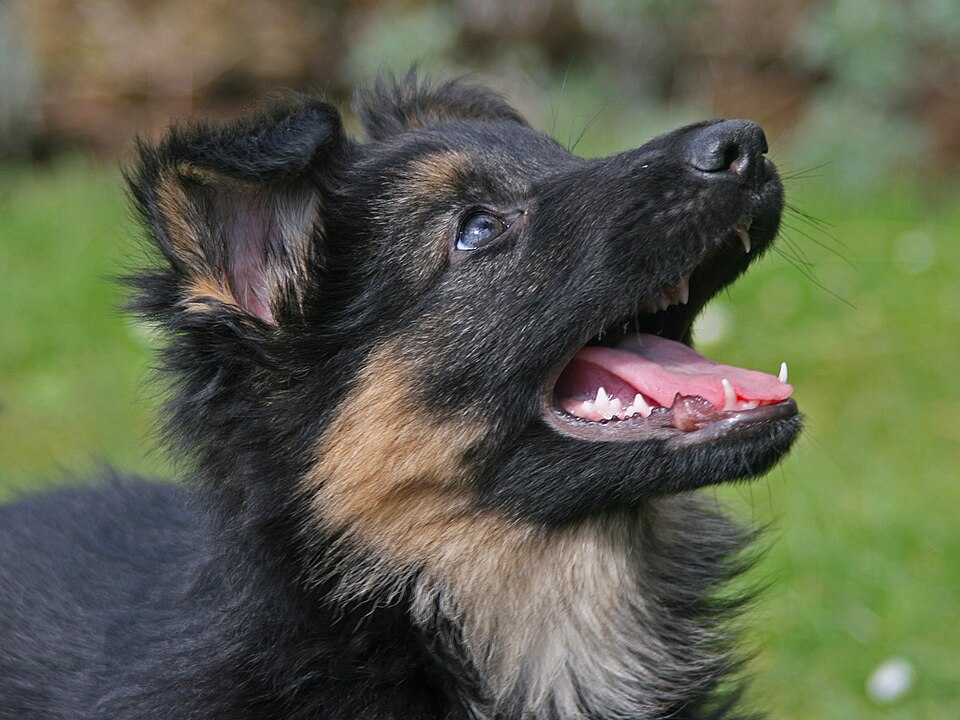
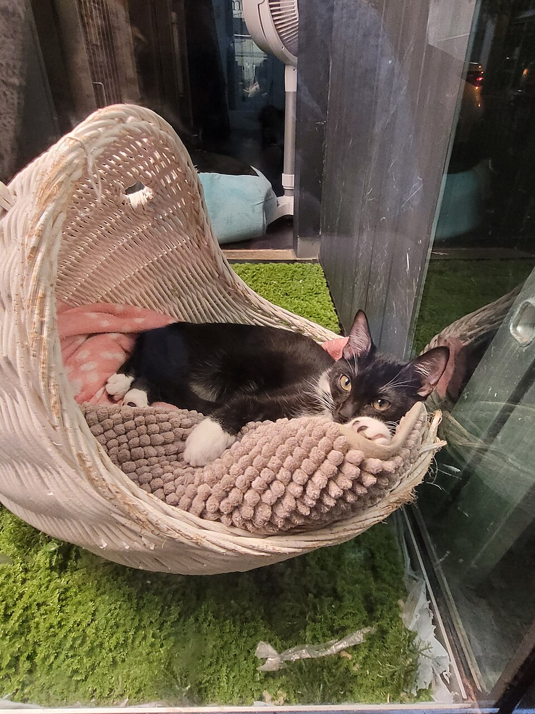
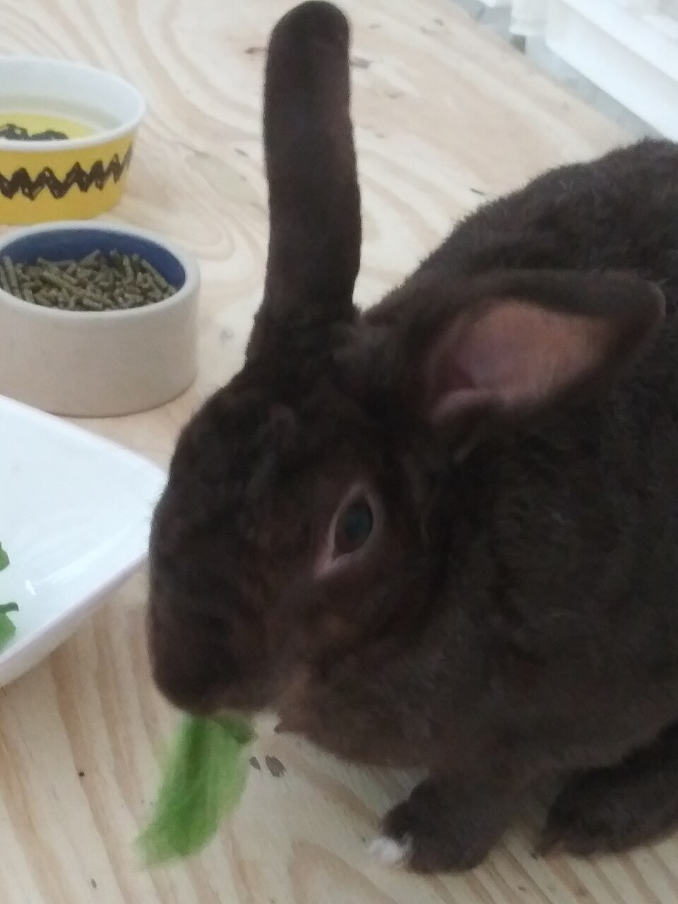

Dogs, cats and small friends looking for Georgia homes
Every animal below has been health-checked by a veterinarian, vaccinated, microchipped, and spayed or neutered before adoption. Our volunteers spend time with each pet daily, so we can tell you honestly about their personality — the zoomies, the cuddles, and everything in between.



| Name | Animal | Breed / Type | Age | Personality | Adoption Fee |
|---|---|---|---|---|---|
| Kim | Dog | Shepherd mix | 8 weeks | Playful, curious, loves everyone she meets | $150 |
| Buddy | Dog | Labrador retriever mix | 4 years | Calm and loyal; already house-trained; great with kids | $95 |
| Willow | Cat | Domestic shorthair tabby | 2 years | Quiet lap cat; prefers a home without dogs | $60 |
| Peaches | Cat | Orange domestic shorthair | 6 months | Energetic kitten; does best adopted with a buddy | $60 |
| Coconut | Rabbit | Dutch mix | 1 year | Gentle and litter-trained; enjoys quiet company | $35 |
| Scout | Dog | Beagle | 7 years | Sweet senior; low-energy couch companion | $45 |
Senior pets like Scout are often overlooked — but they are usually the easiest pets to welcome home: calm, trained, and endlessly grateful. Ask us about our reduced senior-adoption fees!
Found a friend above? Start your application here — it takes about two minutes, and a volunteer will call you within one business day.